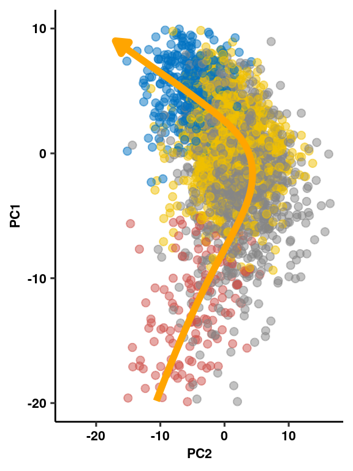

R Notebook
Last updated: 2019-12-06
Checks: 6 1
Knit directory: bentsen-rausch-2019/
This reproducible R Markdown analysis was created with workflowr (version 1.4.0). The Checks tab describes the reproducibility checks that were applied when the results were created. The Past versions tab lists the development history.
Great! Since the R Markdown file has been committed to the Git repository, you know the exact version of the code that produced these results.
The global environment had objects present when the code in the R Markdown file was run. These objects can affect the analysis in your R Markdown file in unknown ways. For reproduciblity it’s best to always run the code in an empty environment. Use wflow_publish or wflow_build to ensure that the code is always run in an empty environment.
The following objects were defined in the global environment when these results were created:
| Name | Class | Size |
|---|---|---|
| data | environment | 56 bytes |
| env | environment | 56 bytes |
The command set.seed(20191021) was run prior to running the code in the R Markdown file. Setting a seed ensures that any results that rely on randomness, e.g. subsampling or permutations, are reproducible.
Great job! Recording the operating system, R version, and package versions is critical for reproducibility.
Nice! There were no cached chunks for this analysis, so you can be confident that you successfully produced the results during this run.
Great job! Using relative paths to the files within your workflowr project makes it easier to run your code on other machines.
Great! You are using Git for version control. Tracking code development and connecting the code version to the results is critical for reproducibility. The version displayed above was the version of the Git repository at the time these results were generated.
Note that you need to be careful to ensure that all relevant files for the analysis have been committed to Git prior to generating the results (you can use wflow_publish or wflow_git_commit). workflowr only checks the R Markdown file, but you know if there are other scripts or data files that it depends on. Below is the status of the Git repository when the results were generated:
Ignored files:
Ignored: .Rproj.user/
Ignored: analysis/figure/
Ignored: test_files/
Untracked files:
Untracked: analysis/figure_6.Rmd
Untracked: analysis/figure_7.Rmd
Untracked: analysis/olig_ttest_padj.csv
Untracked: analysis/supp1.Rmd
Untracked: code/sc_functions.R
Untracked: data/bulk/
Untracked: data/fgf_filtered_nuclei.RDS
Untracked: data/figures/
Untracked: data/filtglia.RDS
Untracked: data/glia/
Untracked: data/lps1.txt
Untracked: data/mcao1.txt
Untracked: data/mcao_d3.txt
Untracked: data/mcaod7.txt
Untracked: data/mouse_data/
Untracked: data/neur_astro_induce.xlsx
Untracked: data/neuron/
Untracked: data/synaptic_activity_induced.xlsx
Untracked: olig_ttest_padj.csv
Untracked: output/agrp_pcgenes.csv
Untracked: output/all_wc_markers.csv
Untracked: output/allglia_wgcna_genemodules.csv
Untracked: output/bulk/
Untracked: output/fig.RData
Untracked: output/fig4_part2.RData
Untracked: output/glia/
Untracked: output/glial_markergenes.csv
Untracked: output/integrated_all_markergenes.csv
Untracked: output/integrated_neuronmarkers.csv
Untracked: output/neuron/
Untracked: wc_de.pdf
Unstaged changes:
Modified: analysis/9_wc_processing.Rmd
Modified: analysis/figure_1.Rmd
Modified: analysis/index.Rmd
Note that any generated files, e.g. HTML, png, CSS, etc., are not included in this status report because it is ok for generated content to have uncommitted changes.
These are the previous versions of the R Markdown and HTML files. If you’ve configured a remote Git repository (see ?wflow_git_remote), click on the hyperlinks in the table below to view them.
| File | Version | Author | Date | Message |
|---|---|---|---|---|
| Rmd | b713020 | Full Name | 2019-12-06 | wflow_publish(“analysis/15_tany_wgcna_pseudo.Rmd”) |
| html | f4dd96b | Full Name | 2019-10-29 | Build site. |
| html | 3b5cbe7 | Full Name | 2019-10-28 | Build site. |
| Rmd | 650ab6b | Full Name | 2019-10-28 | wflow_git_commit(all = T) |
Load Libraries
library(Seurat)
library(WGCNA)
library(cluster)
library(parallelDist)
library(ggsci)
library(emmeans)
library(lme4)
library(ggbeeswarm)
library(genefilter)
library(tidyverse)
library(reshape2)
library(igraph)
library(gProfileR)
library(ggpubr)
library(princurve)
library(here)
library(cowplot)
library(tidygraph)
library(ggraph)Extract Cells for WGCNA
Calculate Pseudoventricle Scores
pcembed <- as.matrix(Embeddings(ventric, reduction = "pca")[,c(1:2)])
y <- principal_curve(pcembed)
# color <- as.factor(ventric$predicted.id)
# levels(color) <- c("#E41A1C", "#377EB8", "#4DAF4A", "#984EA3")
df = data.frame(y$s[order(y$lambda), ])
colnames(df) = c("x", "y")
points <- data.frame(id = ventric$predicted.id, Embeddings(ventric, reduction = "pca")[,c(1:2)])
rand <- sample(nrow(points), 3000)
princ_plot <- ggplot(data = df, aes(x, y)) +
geom_point(data = points[rand,], aes(x=PC_1, y=PC_2, colour=factor(id)), size = 2, inherit.aes = F, alpha=0.5) +
geom_line(arrow = arrow(length=unit(0.30,"cm"), ends="last", type = "closed"), size = 2, color = "orange") +
ggpubr::theme_pubr(legend = "none") +
ggsci::scale_color_jco() +
xlim(c(-20,10)) + coord_flip() + xlab("PC1") + ylab("PC2") + theme_figure
ventric$height <- y$lambda
princ_plotWarning: Removed 37 rows containing missing values (geom_point).Warning: Removed 122 rows containing missing values (geom_path).
| Version | Author | Date |
|---|---|---|
| 3b5cbe7 | Full Name | 2019-10-28 |
Calculate softpower
enableWGCNAThreads()Allowing parallel execution with up to 79 working processes.datExpr<-as.matrix(t(ventric[["SCT"]]@scale.data[ventric[["SCT"]]@var.features,]))
gsg = goodSamplesGenes(datExpr, verbose = 3) Flagging genes and samples with too many missing values...
..step 1powers = c(c(1:10), seq(from = 12, to=40, by=2))
sft=pickSoftThreshold(datExpr,dataIsExpr = TRUE, powerVector = powers, corOptions = list(use = 'p'),
networkType = "signed") Power SFT.R.sq slope truncated.R.sq mean.k. median.k. max.k.
1 1 0.25800 164.00 0.536 2.50e+03 2.50e+03 2.53e+03
2 2 0.19200 73.30 0.572 1.25e+03 1.25e+03 1.28e+03
3 3 0.12600 38.60 0.604 6.26e+02 6.26e+02 6.46e+02
4 4 0.09260 24.20 0.644 3.13e+02 3.13e+02 3.28e+02
5 5 0.04690 14.10 0.664 1.57e+02 1.57e+02 1.66e+02
6 6 0.02260 8.43 0.662 7.86e+01 7.85e+01 8.45e+01
7 7 0.00326 2.68 0.666 3.93e+01 3.93e+01 4.30e+01
8 8 0.01880 -5.74 0.627 1.97e+01 1.97e+01 2.19e+01
9 9 0.06610 -9.63 0.614 9.87e+00 9.85e+00 1.12e+01
10 10 0.20800 -14.80 0.560 4.94e+00 4.93e+00 5.74e+00
11 12 0.67700 -22.60 0.614 1.24e+00 1.24e+00 1.56e+00
12 14 0.54100 -27.90 0.410 3.12e-01 3.10e-01 4.66e-01
13 16 0.55300 -22.30 0.439 7.85e-02 7.79e-02 1.54e-01
14 18 0.48400 -15.00 0.398 1.98e-02 1.96e-02 5.76e-02
15 20 0.42200 -9.40 0.311 5.00e-03 4.92e-03 2.47e-02
16 22 0.44500 -7.06 0.311 1.27e-03 1.24e-03 1.19e-02
17 24 0.44300 -6.08 0.360 3.24e-04 3.11e-04 6.21e-03
18 26 0.44600 -4.65 0.291 8.42e-05 7.83e-05 3.43e-03
19 28 0.48400 -4.19 0.341 2.25e-05 1.97e-05 1.96e-03
20 30 0.49100 -3.41 0.370 6.36e-06 4.97e-06 1.15e-03
21 32 0.42700 -2.89 0.264 1.97e-06 1.25e-06 6.79e-04
22 34 0.46400 -2.72 0.320 7.00e-07 3.16e-07 4.07e-04
23 36 0.47200 -2.50 0.326 2.90e-07 7.98e-08 2.46e-04
24 38 0.47800 -2.29 0.355 1.38e-07 2.02e-08 1.49e-04
25 40 0.50000 -2.25 0.357 7.18e-08 5.10e-09 9.10e-05cex1=0.9
plot(sft$fitIndices[,1], -sign(sft$fitIndices[,3])*sft$fitIndices[,2],xlab="Soft Threshold (power)",ylab="Scale Free Topology Model Fit, signed R^2",type="n", main = paste("Scale independence"))
text(sft$fitIndices[,1], -sign(sft$fitIndices[,3])*sft$fitIndices[,2],labels=powers ,cex=cex1,col="red")
abline(h=0.80,col="red")
| Version | Author | Date |
|---|---|---|
| 3b5cbe7 | Full Name | 2019-10-28 |
#Mean Connectivity Plot
plot(sft$fitIndices[,1], sft$fitIndices[,5],xlab="Soft Threshold (power)",ylab="Mean Connectivity", type="n",main = paste("Mean connectivity"))
text(sft$fitIndices[,1], sft$fitIndices[,5], labels=powers, cex=cex1,col="red")
| Version | Author | Date |
|---|---|---|
| 3b5cbe7 | Full Name | 2019-10-28 |
Generate TOM
softPower <- 12
SubGeneNames <- colnames(datExpr)
adj <- adjacency(datExpr, type = "signed", power = softPower)
diag(adj) <- 0
TOM <- TOMsimilarityFromExpr(datExpr, networkType = "signed", TOMType = "signed", power = softPower, maxPOutliers = 0.05)TOM calculation: adjacency..
..will use 79 parallel threads.
Fraction of slow calculations: 0.000000
..connectivity..
..matrix multiplication (system BLAS)..
..normalization..
..done.colnames(TOM) <- rownames(TOM) <- SubGeneNames
dissTOM <- 1 - TOM
geneTree <- hclust(as.dist(dissTOM), method = "complete") # use complete for method rather than average (gives better results)
plot(geneTree, xlab = "", sub = "", cex = .5, main = "Gene clustering", hang = .001)
| Version | Author | Date |
|---|---|---|
| 3b5cbe7 | Full Name | 2019-10-28 |
Identify Modules
minModuleSize = 15
x = 2
dynamicMods = cutreeDynamic(dendro = geneTree, distM = as.matrix(dissTOM),
method="hybrid", pamStage = F, deepSplit = x,
minClusterSize = minModuleSize) ..cutHeight not given, setting it to 1 ===> 99% of the (truncated) height range in dendro.
..done.dynamicColors = labels2colors(dynamicMods) #label each module with a unique color
plotDendroAndColors(geneTree, dynamicColors, "Dynamic Tree Cut",
dendroLabels = FALSE, hang = 0.03, addGuide = TRUE, guideHang = 0.05,
main = "Gene dendrogram and module colors") #plot the modules with colors
| Version | Author | Date |
|---|---|---|
| 3b5cbe7 | Full Name | 2019-10-28 |
Calculate Eigengenes and Merge Close Modules
MEs = moduleEigengenes(datExpr, dynamicColors)$eigengenes #this matrix gives correlations between cells and module eigengenes (a high value indicates that the cell is highly correlated with the genes in that module)
ME1<-MEs
row.names(ME1)<-row.names(datExpr)
# Calculate dissimilarity of module eigengenes
MEDiss = 1-cor(MEs);
# Cluster module eigengenes
METree = hclust(as.dist(MEDiss), method = "average");
# Plot the result
plot(METree, main = "Clustering of module eigengenes",xlab = "", sub = "")
MEDissThres = 0.2
# Plot the cut line into the dendrogram
abline(h=MEDissThres, col = "red")
| Version | Author | Date |
|---|---|---|
| 3b5cbe7 | Full Name | 2019-10-28 |
The merged module colors
merge = mergeCloseModules(datExpr, dynamicColors, cutHeight = MEDissThres, verbose = 3) mergeCloseModules: Merging modules whose distance is less than 0.2
multiSetMEs: Calculating module MEs.
Working on set 1 ...
moduleEigengenes: Calculating 35 module eigengenes in given set.
Calculating new MEs...
multiSetMEs: Calculating module MEs.
Working on set 1 ...
moduleEigengenes: Calculating 35 module eigengenes in given set.mergedColors = merge$colors
mergedMEs = merge$newMEs
moduleColors = mergedColors
MEs = mergedMEs
modulekME = signedKME(datExpr,MEs)Plot merged modules
plotDendroAndColors(geneTree, cbind(dynamicColors, mergedColors),
c("Dynamic Tree Cut", "Merged dynamic"),
dendroLabels = FALSE, hang = 0.03,
addGuide = TRUE, guideHang = 0.05)
| Version | Author | Date |
|---|---|---|
| 3b5cbe7 | Full Name | 2019-10-28 |
# Rename to moduleColors
moduleColors = mergedColors
# Construct numerical labels corresponding to the colors
# colorOrder = c("grey", standardColors(50));
# moduleLabels = match(moduleColors, colorOrder)-1
MEs = mergedMEs
modulekME = signedKME(datExpr,MEs)Type gene name, prints out gene names also in that module
modules<-MEs
c_modules<-data.frame(moduleColors)
row.names(c_modules)<-colnames(datExpr) #assign gene names as row names
module.list.set1<-substring(colnames(modules),3) #removes ME from start of module names
index.set1<-0
Network=list() #create lists of genes for each module
for (i in 1:length(module.list.set1)){index.set1<-which(c_modules==module.list.set1[i])
Network[[i]]<-row.names(c_modules)[index.set1]}
names(Network)<-module.list.set1
lookup<-function(gene,network){return(network[names(network)[grep(gene,network)]])} #load functionFilter metadata table and correlate with eigengenes
nGenes = ncol(datExpr)
nSamples = nrow(datExpr)
MEs = orderMEs(MEs)
MEs %>% dplyr::select(-MEgrey) -> MEs
var<-model.matrix(~0+ventric$trt)
moduleTraitCor <- cor(MEs, var, use="p")
cor<-moduleTraitCor[abs(moduleTraitCor[,1])>.2,]
moduleTraitPvalue = corPvalueStudent(moduleTraitCor, nSamples)
cor<-melt(cor)
ggplot(cor, aes(Var2, Var1)) + geom_tile(aes(fill = value),
colour = "white") + scale_fill_gradient2(midpoint = 0, low = "blue", mid = "white",
high = "red", space = "Lab", name="Correlation \nStrength") +
theme(axis.text.x = element_text(angle = 45, hjust = 1)) + xlab("Treatment") + ylab(NULL)
| Version | Author | Date |
|---|---|---|
| 3b5cbe7 | Full Name | 2019-10-28 |
Get hubgenes
hubgenes<-lapply(seq_len(length(Network)), function(x) {
dat<-modulekME[Network[[x]],]
dat<-dat[order(-dat[paste0("kME",names(Network)[x])]),]
gene<-rownames(dat)
return(gene)
})
names(hubgenes)<-names(Network)
d <- unlist(hubgenes)
d <- data.frame(gene = d,
vec = names(d))
write_csv(d, path=here("output/glia/wgcna/wc_tany_wgcna_genemodules.csv"))Linear regression
data<-data.frame(MEs, trt = ventric$trt,
sample = as.factor(ventric$sample),
batch = as.factor(ventric$batch),
height = ventric$height,
bin = cut(ventric$height, seq_len(max(ventric$height))),
type = ventric$predicted.id)
levels(data$bin) <- c(1:74)
data$bin <- as.numeric(as.character(data$bin))
data %>% filter(bin>=12 & bin <= 40) %>% mutate(bin=factor(bin)) -> data
plot <- lapply(colnames(MEs), function(x) {
x <- data.frame(scale(data[,x]))
x$bin<-data$bin
x$trt<-as.factor(data$trt)
x$type<-as.factor(data$type)
x<-melt(x, id.vars=c("trt","bin","type"))
x<-x[complete.cases(x),]
x %>% dplyr::group_by(trt, bin) %>%
dplyr::summarise(mean = mean(value), sd=sd(value), se = sd/sqrt(length(value))) ->plotval
return(plotval)
})
names(plot) <- colnames(MEs)
plot_df <- bind_rows(plot, .id="id")Plotting
mod <- lapply(colnames(MEs)[grepl("^ME", colnames(MEs))], function(me) {
tryCatch({
mod <- lmer(data[[me]] ~ trt*bin + (1 | batch) + (1 | sample), data = data)
pairwise <- emmeans(mod, pairwise ~ trt|bin)
plot <- data.frame(plot(pairwise, plotIt = F)$data)
sig <- as.data.frame(pairwise$contrasts)
return(sig) }, error = function(err) {
print(err)
}
)
})Warning in checkConv(attr(opt, "derivs"), opt$par, ctrl =
control$checkConv, : Model failed to converge with max|grad| = 0.0025552
(tol = 0.002, component 1)Warning in checkConv(attr(opt, "derivs"), opt$par, ctrl =
control$checkConv, : Model failed to converge with max|grad| = 0.00659419
(tol = 0.002, component 1)Warning in checkConv(attr(opt, "derivs"), opt$par, ctrl =
control$checkConv, : Model failed to converge with max|grad| = 0.00506122
(tol = 0.002, component 1)Warning in checkConv(attr(opt, "derivs"), opt$par, ctrl =
control$checkConv, : Model failed to converge with max|grad| = 0.00202572
(tol = 0.002, component 1)Warning in checkConv(attr(opt, "derivs"), opt$par, ctrl =
control$checkConv, : Model failed to converge with max|grad| = 0.00372838
(tol = 0.002, component 1)Warning in checkConv(attr(opt, "derivs"), opt$par, ctrl =
control$checkConv, : Model failed to converge with max|grad| = 0.00204838
(tol = 0.002, component 1)names(mod) <- colnames(MEs)
mod_df <- bind_rows(mod, .id="id")
mod_df$p.adj<-p.adjust(mod_df$p.value)
plot_df %>% filter(trt=="FGF") %>% mutate(p.adj = mod_df$p.adj) -> plot_f_df
plot_df %>% filter(trt=="PF") %>% mutate(p.adj = mod_df$p.adj) -> plot_p_df
plot_df <- rbind(plot_f_df, plot_p_df)
plot_df%>%mutate(signif=ifelse(p.adj>.05, "ns",
ifelse(p.adj<.05&p.adj>.01, "*",
ifelse(p.adj<.01&p.adj>.001, "**",
"***")))) -> plotval_frame
plotval_frame$signif[plotval_frame$signif=="ns"]<-NA
plotval_frame$signif[plotval_frame$trt!="FGF"]<-NA
detach("package:here", unload = T)
library(here)
write_csv(as.data.frame(plotval_frame), path = here("output/glia/wgcna/wc_tany_pseudovent_linmod.csv"))
mod_df %>% dplyr::group_by(id) %>%
dplyr::summarise(order = quantile(-log10(p.adj),.75)*(quantile(abs(estimate),.75))) %>%
arrange(-order) %>%
mutate(pubname = paste0("sc-tany-M",seq_len(length(order)))) %>% dplyr::select(1,3) -> rename
write_csv(as.data.frame(rename), path = here("output/glia/wgcna/wc_tany_colortopubname.csv"))
mod_df %>% filter(p.adj<0.05, estimate>0) -> sig_df
sig_mods <- names(which(table(sig_df$id) > 5))
height_type <- ggplot() + geom_density(data=data, aes(x=(-height), fill=type), inherit.aes = F, alpha=0.25) + coord_flip() +
theme_pubr(legend = "none") + xlab("Pseudo-ventricle Height") + ylab(NULL) + scale_fill_jco() + theme(axis.text.x = element_blank(), axis.text.y = element_blank()) + theme_figure
plotval_frame$pubname <- rename$pubname[match(plotval_frame$id, rename$id)]
mod <- ggplot(plotval_frame,
aes(x=(-as.numeric(as.character(bin))), y=mean, color=trt, label=signif)) +
geom_errorbar(aes(ymin=mean-se, ymax=mean+se, width=.1)) +
geom_line() + geom_point() + scale_color_manual(values=c("#000000","#999999")) +
geom_text(color="black",size=3,aes(y= mean + .5), position=position_dodge(.9), angle=90) +
coord_flip() +
facet_wrap(vars(pubname), scales="free", nrow=4) + theme_pubr() + ylab("Scaled ME Expression") +
xlab(NULL) +
theme(legend.position="none", axis.text.y = element_blank(),
axis.text.x = element_text(angle=45, hjust=1)) + theme_figure
modWarning: Removed 1871 rows containing missing values (geom_text).ggsave(here("data/figures/supp/alltany_mods_pseudovent.pdf"), width = 12, h=12)Warning: Removed 1871 rows containing missing values (geom_text).mod_sig <- ggplot(plotval_frame[plotval_frame$id%in%c(sig_mods),], aes(x=(-as.numeric(as.character(bin))), y=mean, color=trt, label=signif)) +
geom_errorbar(aes(ymin=mean-se, ymax=mean+se, width=.1)) +
geom_line() + geom_point() + scale_color_manual(values=c("#000000","#999999")) +
geom_text(color="black",size=3,aes(y= mean + .5), position=position_dodge(.9), angle=90) + coord_flip() +
facet_wrap(vars(pubname), scales="free", nrow=1) + theme_pubr() + ylab("Scaled ME Expression") + xlab(NULL) +
theme(legend.position="none", axis.text.y = element_blank(), axis.text.x = element_text(angle=45, hjust=1)) + theme_figureUMAP plot
ventric_umap <- as.data.frame(Embeddings(ventric, reduction="umap"))
ventric_umap$`Cell Type` <- ventric$predicted.id
ggplot(ventric_umap, aes(x=UMAP_1, y=UMAP_2, color=`Cell Type`)) +
geom_point(alpha=0.5) + xlab("UMAP1") + ylab("UMAP2") + ggpubr::theme_pubr() +
ggsci::scale_color_jco(labels=c(expression(alpha[1]~Tanycyte), expression(alpha[2]~Tanycyte),
expression(beta[1]~Tanycyte), expression(beta[2]~Tanycyte))) +
coord_cartesian(clip="off") +
guides(color = guide_legend(override.aes = list(size=3))) +
theme(legend.position = c(0.93,0.2), legend.background = element_blank(),
legend.title = element_blank(), legend.key.size = unit(0, 'lines')) -> umap
umapArrange plot
tany_day5 <- plot_grid(umap, princ_plot, height_type, ggplot() + theme_void(), mod_sig, rel_widths = c(2,1,1,1, 2), align = "hv", axis="tb", nrow=1, scale=0.9, labels=c("a","b","","","c"))Warning: Removed 37 rows containing missing values (geom_point).Warning: Removed 122 rows containing missing values (geom_path).Warning: Removed 131 rows containing missing values (geom_text).tany_day5 # Calculate GO term enrichment
# Calculate GO term enrichment
goterms<-lapply(hubgenes[gsub(sig_mods,pattern = "ME",replacement = "")], function(x) {
x<-gprofiler(x, ordered_query = T, organism = "mmusculus", significant = T, custom_bg = colnames(datExpr),
src_filter = c("GO:BP","REAC","KEGG"), hier_filtering = "strong",
min_isect_size = 2,
sort_by_structure = T,exclude_iea = T,
min_set_size = 10, max_set_size = 300,correction_method = "fdr")
x<-x[order(x$p.value),]
return(x)
})
goterms %>% bind_rows(.id="id") %>%
mutate(padj=p.adjust(p.value, "fdr")) -> godat
write_csv(godat, path=here("output/glia/wgcna/wc_wgcna_tany_goterms.csv"))
save.image(file = here("output/glia/wgcna/wc_tany_results.RData"))Plot GO terms
goterms[[1]] %>%
select(domain, term.name, p.value, overlap.size) %>% arrange(p.value) %>% top_n(5, -p.value) %>%
mutate(x = fct_reorder(str_to_title(str_wrap(term.name,20)), -p.value)) %>%
mutate(y = -log10(p.value)) %>%
ggplot(aes(x,y)) +
geom_col(colour="black", width = 1, fill="gray80", size=1) +
theme_pubr(legend="none") +
theme(axis.text.y = element_text(size=8)) +
scale_size(range = c(5,10)) +
ggsci::scale_fill_lancet() +
coord_flip() +
xlab(NULL) + ylab(expression(bold(-log[10]~pvalue))) +
theme_figure -> tany_sc1
tany_sc1goterms[[3]] %>%
select(domain, term.name, p.value, overlap.size) %>% arrange(p.value) %>% top_n(5, -p.value) %>%
mutate(x = fct_reorder(str_to_title(str_wrap(term.name,20)), -p.value)) %>%
mutate(y = -log10(p.value)) %>%
ggplot(aes(x,y)) +
geom_col(colour="black", width = 1, fill="gray80", size=1) +
theme_pubr(legend="none") +
theme(axis.text.y = element_text(size=8)) +
scale_size(range = c(5,10)) +
ggsci::scale_fill_lancet() +
coord_flip() +
xlab(NULL) + ylab(expression(bold(-log[10]~pvalue))) +
theme_figure -> tany_sc3
tany_sc3# Gene network plots
hubgenes <- lapply(seq_len(length(Network)), function(x) {
dat <- modulekME[Network[[x]], ]
dat <- dat[order(-dat[paste0("kME", names(Network)[x])]), ]
gene <- data.frame(gene=rownames(dat),kme=dat[,x])
return(gene)
})
names(hubgenes) <- names(Network)
color <- c("darkgreen")
lapply(color, function(col) {
maxsize <- 15
hubs <- data.frame(genes=hubgenes[[col]]$gene[1:maxsize], kme = hubgenes[[col]]$kme[1:maxsize], mod = rep(col,15))
}) -> hub_plot
hub_plot <- lapply(hub_plot, function(x) {
adj[as.character(x$genes), as.character(x$genes)] %>%
graph.adjacency(mode = "undirected", weighted = T, diag = FALSE) %>%
as_tbl_graph(g1) %>% upgrade_graph() %>% activate(nodes) %>% dplyr::mutate(mod=x$mod) %>%
dplyr::mutate(kme=x$kme) %>%
activate(edges)}
)
hub_plot[[1]] %>% activate(nodes) %>% mutate(color = ifelse(name == "Vim", yes="red", no = "black")) -> hub_plot
set.seed("139")
ggraph(hub_plot, layout = 'kk') +
geom_edge_link(color="darkgrey", aes(alpha = weight), show.legend = F) +
scale_edge_width(range = c(0.2, .5)) + geom_node_text(aes(label = name, color=color), fontface="bold", size=4, repel=T) +
geom_node_point(shape=21, alpha=0.5, fill="grey70", size=3) + scale_color_manual(values=c("gray0","red")) +
theme_graph() + theme(legend.position = "none", plot.title = element_text(hjust=0.5, vjust=1)) +
coord_cartesian(clip = "off") -> genenet
genenet# Vimentin quantification
readxl::read_xlsx(here("data/mouse_data/fig5/191118_Vim_quantification.xlsx"), range="A5:B9") %>%
reshape2::melt() -> vim
vim %>% dplyr::group_by(variable) %>% dplyr::summarise(mean = mean(value), sd = sd(value), se = sd/sqrt(length(value))) %>%
ggplot(aes(x = variable, y = mean, fill = variable, color = variable)) +
geom_col(width=1, alpha=0.75, colour="black", position="dodge") +
geom_errorbar(aes(x=variable, ymin = mean-se, ymax=mean+se), width=0.2, position = position_dodge(0.9)) +
geom_jitter(data = vim, inherit.aes = F, aes(x=variable, y=value, fill=variable),
alpha=0.5, shape=21, position = position_jitterdodge(.5)) + xlab(NULL) +
geom_signif(y_position=c(7.5e6), xmin=c(1.2), xmax=c(1.8),
annotation=c("*"), tip_length=0, size = 0.5, textsize = 5, color="black") +
ylab(expression(bold(Volume~(mu*m^3)))) + scale_fill_manual(values=c("gray80","gray30"), name="") +
scale_color_manual(values=c("gray80","gray30"), name="") +
theme_pubr() + theme(legend.position = "none", axis.text.x = element_text(angle=45,hjust=1)) + theme_figure -> vim_quant
vim_plot <- cowplot::plot_grid(ggplot() + theme_void(), vim_quant, nrow=1, scale=0.8, labels=c("e"), rel_widths = c(2,1))Arrange bottom half of plot
sc1 <- plot_grid(genenet, tany_sc1, scale=c(1,.8), labels="d")
tany_bot <- plot_grid(sc1, vim_plot, rel_widths = c(1.25,1))
tany_botArrange full figure
plot_grid(tany_day5, tany_bot, ncol=1, rel_heights = c(1.25,1))ggsave(filename = here("data/figures/fig5/fig5.tiff"), width = 12, h=7, compression="lzw")
sessionInfo()R version 3.5.3 (2019-03-11)
Platform: x86_64-pc-linux-gnu (64-bit)
Running under: Storage
Matrix products: default
BLAS/LAPACK: /usr/lib64/libopenblas-r0.3.3.so
locale:
[1] LC_CTYPE=en_DK.UTF-8 LC_NUMERIC=C
[3] LC_TIME=en_DK.UTF-8 LC_COLLATE=en_DK.UTF-8
[5] LC_MONETARY=en_DK.UTF-8 LC_MESSAGES=en_DK.UTF-8
[7] LC_PAPER=en_DK.UTF-8 LC_NAME=C
[9] LC_ADDRESS=C LC_TELEPHONE=C
[11] LC_MEASUREMENT=en_DK.UTF-8 LC_IDENTIFICATION=C
attached base packages:
[1] stats graphics grDevices utils datasets methods base
other attached packages:
[1] here_0.1 ggraph_1.0.2 tidygraph_1.1.2
[4] cowplot_1.0.0 princurve_2.1.4 ggpubr_0.2.1
[7] magrittr_1.5 gProfileR_0.6.7 igraph_1.2.4.1
[10] reshape2_1.4.3 forcats_0.4.0 stringr_1.4.0
[13] dplyr_0.8.3 purrr_0.3.2 readr_1.3.1.9000
[16] tidyr_0.8.3 tibble_2.1.3 tidyverse_1.2.1
[19] genefilter_1.64.0 ggbeeswarm_0.6.0 ggplot2_3.2.1
[22] lme4_1.1-21 Matrix_1.2-17 emmeans_1.3.5.1
[25] ggsci_2.9 parallelDist_0.2.4 cluster_2.1.0
[28] WGCNA_1.68 fastcluster_1.1.25 dynamicTreeCut_1.63-1
[31] Seurat_3.0.3.9036
loaded via a namespace (and not attached):
[1] estimability_1.3 R.methodsS3_1.7.1 coda_0.19-3
[4] acepack_1.4.1 bit64_0.9-7 knitr_1.23
[7] irlba_2.3.3 multcomp_1.4-10 R.utils_2.9.0
[10] data.table_1.12.2 rpart_4.1-15 RCurl_1.95-4.12
[13] doParallel_1.0.14 generics_0.0.2 metap_1.1
[16] BiocGenerics_0.28.0 preprocessCore_1.44.0 TH.data_1.0-10
[19] RSQLite_2.1.1 RANN_2.6.1 future_1.14.0
[22] bit_1.1-14 xml2_1.2.0 lubridate_1.7.4
[25] assertthat_0.2.1 viridis_0.5.1 xfun_0.8
[28] hms_0.5.0 evaluate_0.14 DEoptimR_1.0-8
[31] caTools_1.17.1.2 readxl_1.3.1 DBI_1.0.0
[34] htmlwidgets_1.3 stats4_3.5.3 ellipsis_0.2.0.1
[37] backports_1.1.4 annotate_1.60.1 gbRd_0.4-11
[40] RcppParallel_4.4.3 vctrs_0.2.0 Biobase_2.42.0
[43] ROCR_1.0-7 withr_2.1.2 ggforce_0.3.0.9000
[46] robustbase_0.93-5 checkmate_1.9.4 sctransform_0.2.0
[49] ape_5.3 lazyeval_0.2.2 crayon_1.3.4
[52] pkgconfig_2.0.2 labeling_0.3 tweenr_1.0.1
[55] nlme_3.1-140 vipor_0.4.5 rematch_1.0.1
[58] nnet_7.3-12 rlang_0.4.0 globals_0.12.4
[61] sandwich_2.5-1 modelr_0.1.4 rsvd_1.0.2
[64] cellranger_1.1.0 rprojroot_1.3-2 polyclip_1.10-0
[67] matrixStats_0.54.0 lmtest_0.9-37 boot_1.3-22
[70] zoo_1.8-6 base64enc_0.1-3 beeswarm_0.2.3
[73] whisker_0.3-2 ggridges_0.5.1 png_0.1-7
[76] viridisLite_0.3.0 bitops_1.0-6 R.oo_1.22.0
[79] KernSmooth_2.23-15 blob_1.1.1 workflowr_1.4.0
[82] robust_0.4-18.1 S4Vectors_0.20.1 ggsignif_0.5.0
[85] scales_1.0.0 memoise_1.1.0 plyr_1.8.4
[88] ica_1.0-2 gplots_3.0.1.1 bibtex_0.4.2
[91] gdata_2.18.0 compiler_3.5.3 lsei_1.2-0
[94] RColorBrewer_1.1-2 rrcov_1.4-7 fitdistrplus_1.0-14
[97] cli_1.1.0 listenv_0.7.0 pbapply_1.4-1
[100] htmlTable_1.13.1 Formula_1.2-3 MASS_7.3-51.4
[103] tidyselect_0.2.5 stringi_1.4.3 highr_0.8
[106] yaml_2.2.0 latticeExtra_0.6-28 ggrepel_0.8.0.9000
[109] grid_3.5.3 tools_3.5.3 future.apply_1.3.0
[112] parallel_3.5.3 rstudioapi_0.10 foreach_1.4.4
[115] foreign_0.8-71 git2r_0.25.2 gridExtra_2.3
[118] farver_1.1.0 Rtsne_0.15 digest_0.6.20
[121] Rcpp_1.0.2 broom_0.5.2 SDMTools_1.1-221.1
[124] RcppAnnoy_0.0.12 httr_1.4.1 AnnotationDbi_1.44.0
[127] npsurv_0.4-0 Rdpack_0.11-0 colorspace_1.4-1
[130] rvest_0.3.4 XML_3.98-1.20 fs_1.3.1
[133] reticulate_1.13 IRanges_2.16.0 splines_3.5.3
[136] uwot_0.1.3 plotly_4.9.0 fit.models_0.5-14
[139] xtable_1.8-4 jsonlite_1.6 nloptr_1.2.1
[142] zeallot_0.1.0 R6_2.4.0 Hmisc_4.2-0
[145] pillar_1.4.2 htmltools_0.3.6 glue_1.3.1
[148] minqa_1.2.4 codetools_0.2-16 tsne_0.1-3
[151] pcaPP_1.9-73 mvtnorm_1.0-11 lattice_0.20-38
[154] leiden_0.3.1 gtools_3.8.1 GO.db_3.7.0
[157] survival_2.44-1.1 rmarkdown_1.13 munsell_0.5.0
[160] iterators_1.0.10 impute_1.56.0 haven_2.1.0
[163] gtable_0.3.0